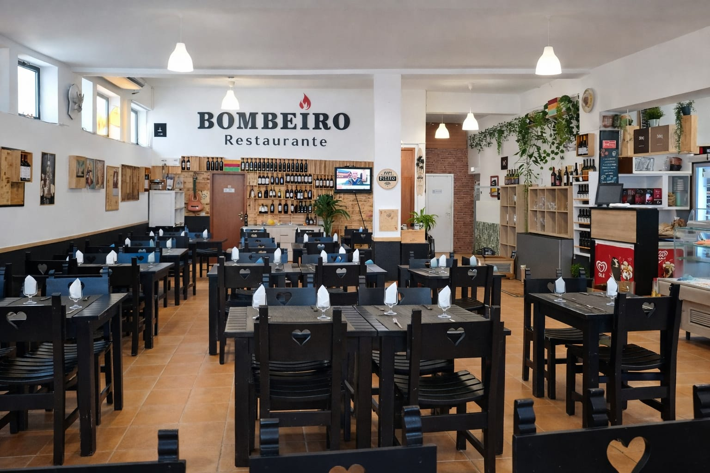
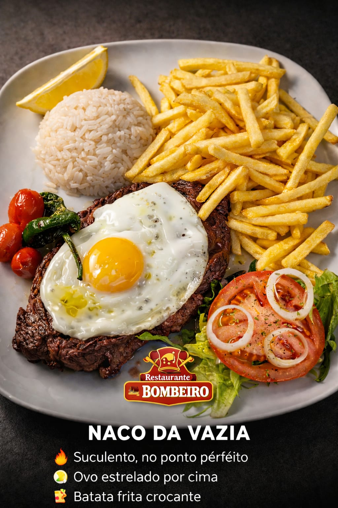
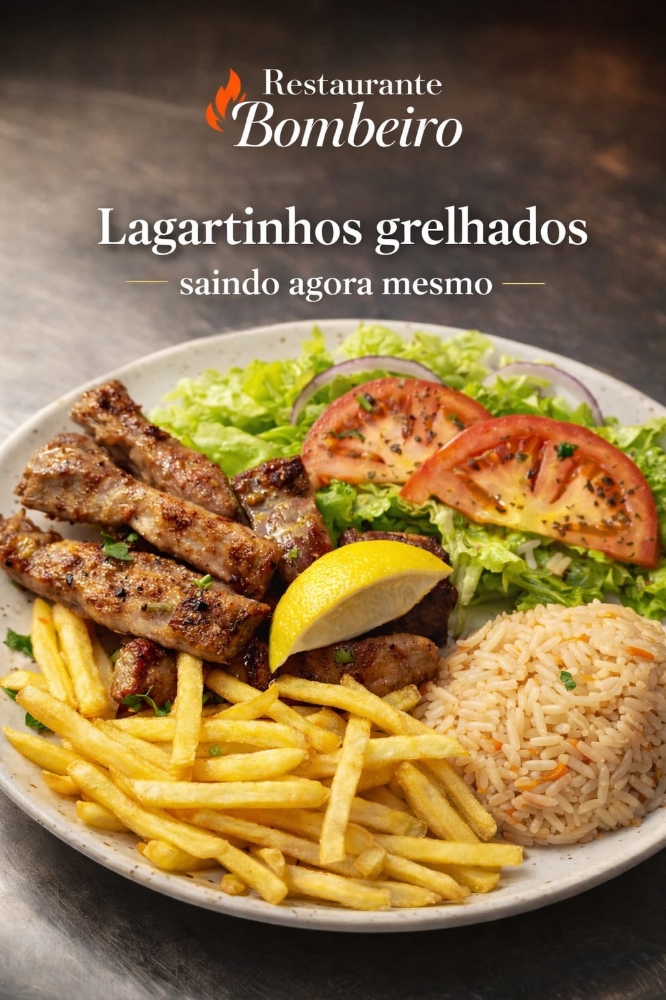

Peixe fresco • Carnes na brasa • Cozinha tradicional



Morada: Rua dos Bombeiros Voluntários, Portimão, 8500-649, Portugal
Telefone: +351 964 663 457
Horário: Segunda a Sexta 09:00 às 15:30 • 19:00 às 22:00 | Sábado somente almoço | Domingo fechado
Especialidade: Grelhados, peixe fresco, carnes na brasa e cozinha tradicional portuguesa.
Reservas: Atendimento direto pelo WhatsApp.